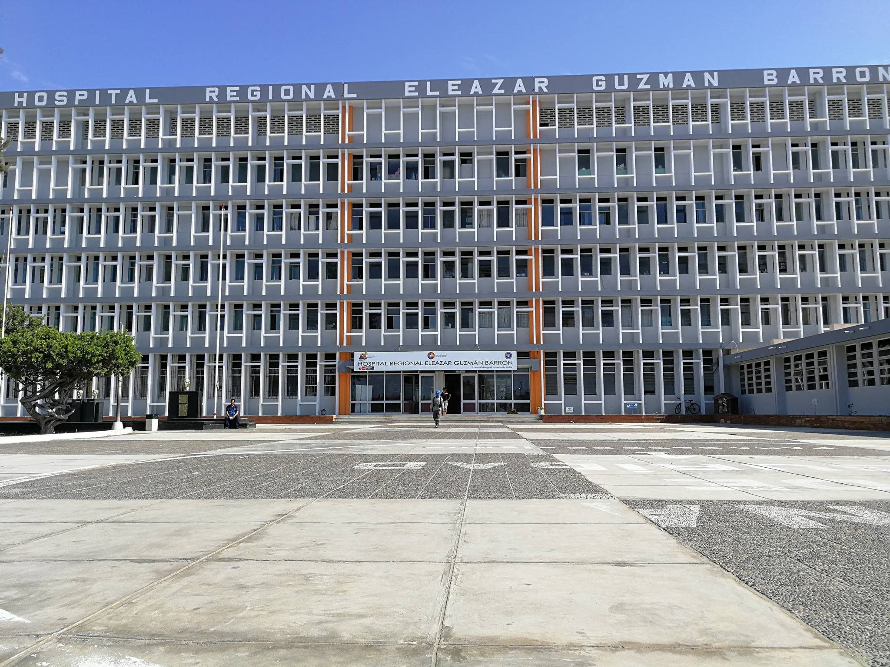

Reseña Histórica
Nuestra Trayectoria en el Servicio de la Salud

Nuestra Historia
Inaugurado el 10 de octubre de 1981 por el presidente Arq. Fernando Belaúnde Terry, con financiamiento y asesoría técnica del Gobierno Alemán, el Hospital Regional Eleazar Guzmán Barrón es el centro hospitalario de referencia más importante de la provincia del Santa y el departamento de Áncash. A lo largo de más de cuatro décadas ha evolucionado constantemente, incorporando nuevas especialidades médicas y quirúrgicas para convertirse en el pilar fundamental del bienestar de nuestra comunidad.
Línea del Tiempo Institucional
Hitos que definen nuestra historia y nuestro compromiso
Inauguración e Inicio de Operaciones
Entrega oficial de la infraestructura compuesta por el bloque central de cinco pisos —departamentos médicos, centro quirúrgico y obstétrico— y bloques de residencia y mantenimiento. Se erigió como el hospital más moderno de la región del Santa, inaugurado por el presidente Arq. Fernando Belaúnde Terry con apoyo técnico del Gobierno Alemán.
Respuesta Histórica ante el Cólera
Durante la severa crisis epidemiológica, el hospital operó como Unidad de Tratamiento del Cólera (UTC), asistiendo hasta 700 pacientes diarios con solo 100 camas instaladas, atendiendo al 54 % de los afectados de Chimbote y Nuevo Chimbote hasta controlar el brote de forma heroica en 1995.
Acreditación UNICEF
Designado por el Fondo de las Naciones Unidas para la Infancia (UNICEF) como "Hospital Amigo de la Madre y del Niño", en mérito a su labor de promoción de la lactancia materna y el cuidado integral materno-infantil de la provincia del Santa.
Pioneros en Pediatría
Inauguración del primer Módulo de Atención Integral del Niño a nivel nacional, convirtiendo al hospital en pionero y referente de la descentralización de servicios pediátricos especializados en el Perú, cuidando a la niñez chimbotana.
Hospital Docente de Referencia
Calificado como "Hospital Docente de Capacitación Materno Infantil", abriendo las puertas a la formación universitaria y especialización de cientos de médicos, enfermeras y obstetras del departamento de Áncash.
Afrontamiento y Modernización COVID-19
Frente a la pandemia global, el hospital implementó un ambiente de hospitalización temporal con 100 camas clínicas e instalaciones de soporte de oxígeno de alto flujo, resguardando la salud de la población de Nuevo Chimbote en el momento más crítico.
Inauguración de Tomógrafo de 128 Cortes
Puesta en funcionamiento de un moderno tomógrafo de última generación valorizado en más de tres millones de soles, permitiendo diagnósticos tridimensionales rápidos, precisos y de alta resolución para los asegurados de Chimbote y la región Áncash.
Implementación de FUA Digital
Lanzamiento del Formato Único de Atención (FUA) electrónico, consolidando la transformación digital de la institución: reducción de tiempos de espera y cumplimiento de la política nacional de cero papel.
⭐ Hitos Destacados
Categorización como Institución de Salud de Alta Complejidad (Nivel II-2)
Implementación de más de 20 especialidades médicas y quirúrgicas
Adquisición de equipamiento diagnóstico de última generación, incluyendo tomógrafo de 128 cortes
Programas de capacitación continua para el personal médico y asistencial
Mejora sostenida en indicadores de atención y satisfacción del usuario
Consolidación del proceso de transformación digital con la adopción del FUA electrónico